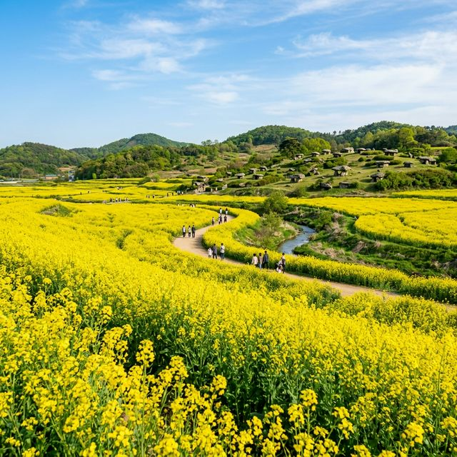
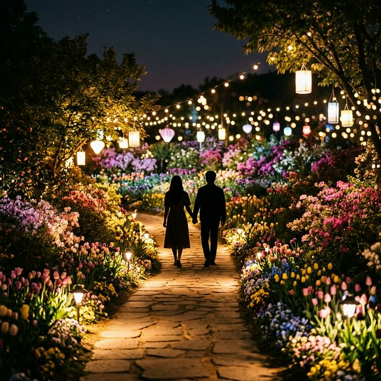
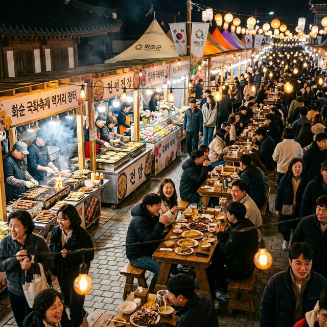

화순 고인돌 봄꽃 축제 2026 가이드 선사시대로 떠나는 꽃 나들이 유채꽃과 야생화의 향연
찬란한 봄의 정취를 담은 전남 화순으로 여러분을 초대합니다! 2026년 4월, 화순은 온통 노란 유채꽃과 형형색색의 야생화로 물들며 방문객들의 마음을 설레게 하고
있습니다. 올해는 '봄꽃 야행'이라는 특별한 테마로 낮보다 아름다운 밤의 정원을 선보이며 더욱 깊어진 낭만을 선사하는데요. 유네스코 세계유산이라는 역사적 가치 위에 피어난 봄의 축제, 그 생생한 현장
정보를 지금부터 자세히 소개해 드리겠습니다.
1. 2026 화순 봄꽃 축제 기본 일정 및 개최 장소 확인
올해로 더욱 세련되게 변모한 '2026 화순 봄꽃 축제'는 2026년 4월 17일(금)부터 4월 26일(일)까지 딱 10일간만 펼쳐지는 봄의 한정판 선물입니다. 장소
선정에서도 큰 변화가 생겼는데, 기존의 고인돌 유적지뿐만 아니라 화순읍의 '꽃강길'과 '남산공원' 일대를 주 무대로 사용하여 접근성을 대폭 높였습니다. 특히 화순천을 따라 조성된 2.1km의 꽃강길은
걷는 것만으로도 힐링이 되는 마법 같은 공간으로 재탄생했습니다.
축제가 '야행'을 메인 테마로 삼은 만큼 운영 시간도 오후 3시부터 저녁 9시까지로 조정되었습니다. 이는 한낮의 뜨거운 해를 피해 선선한 바람이 부는 저녁 시간에 꽃과 조명이 어우러진 몽환적인 분위기를
만끽하도록 하려는 주최 측의 세심한 배려입니다. 남산공원 역시 야간 경관 조명을 대대적으로 보강하여, 밤이 되면 하늘의 별이 땅으로 내려온 듯한 빛의 정원을 감상할 수 있습니다.

화순 꽃강길을 따라 끝없이 펼쳐진 유채꽃 단지의 전경 — AI 제작 이미지
2. '봄꽃 야행': 밤에 더 빛나는 화순의 낭만 레이아웃
2026 화순 봄꽃 축제의 진정한 매력은 해가 질 무렵부터 시작됩니다. 꽃강길 2.1km 구간에는 수만 개의 LED 장식과 미디어 아트 기술이 접목되어, 어둠이 내리면
꽃들이 제각기 고유의 빛을 내뿜는 듯한 착각을 불러일으킵니다. 특히 '플로라 가든'과 '빛의 터널' 구역은 이번 축제의 시그니처 포토존으로, 연인들에게는 잊지 못할 데이트 코스를
제공합니다.
남산공원 언덕에서 바라보는 화순읍의 야경과 꽃들의 조화는 그야말로 일품입니다. 야간 관람의 안전을 위해 모든 산책로는 밝은 조명을 유지하면서도, 꽃의 색감을 해치지 않는 특수 파장의 램프를 사용하여
사진 촬영 시에도 실물 못지않은 아름다운 결과물을 얻을 수 있습니다. 저녁 7시 이후부터는 곳곳에서 작은 버스킹 공연이 열려, 감미로운 음악과 함께 꽃향기를 맡는 오감 만족의 시간을 보낼 수 있습니다.
3. 화려한 라인업: 주말마다 펼쳐지는 '봄밤 콘서트'
축제에 활기를 더해줄 공연 프로그램 또한 압도적입니다. 화순 공설운동장 특설무대에서 펼쳐지는 '봄밤 콘서트'는 매 주말 관광객들의 체류 시간을 늘리는 핵심 요소입니다.
오늘인 4월 18일(토) 저녁 7시에는 감성 발라더 이석훈과 가수 별의 무대가 예정되어 있어, 화순의 밤을 더욱 서정적으로 물들일 예정입니다. 주말 공연은 사전 예약 없이 누구나 무료로 관람할 수 있어
인파가 대단할 것으로 보입니다.
내일인 4월 19일(일)에는 서도밴드와 거미의 파워풀한 무대가 준비되어 있어 벌써부터 팬들의 문의가 쏟아지고 있습니다. 공연장 입장은 오후 5시부터 가능하며, 좋은 자리를 선점하기 위해서는 조금
서두르시는 것이 좋습니다. 콘서트뿐만 아니라 축제 기간 내내 남산공원 잔디광장에서는 지역 예술인들의 마술쇼, 버블쇼 등이 수시로 열려 아이들에게는 웃음을, 어른들에게는 여유를 선물합니다.

야간 조명과 꽃이 어우러진 '봄꽃 야행'의 몽환적인 분위기 — AI 제작 이미지
4. 꽃강길 유채꽃 단지와 5개 테마 정원 탐방법
이번 축제의 공간 구성은 크게 5개의 테마 정원으로 나누어집니다. 가장 먼저 만나게 되는 '플로라 가든'은 화려한 화단과 조형물이 어우러진 곳이며, '봄꽃 정원'은 수천
송이의 튤립과 라넌큘러스가 화사함을 뽐냅니다. 각 정원은 저마다의 색깔과 꽃말을 담아 조성되어 있어 지루할 틈이 없습니다. 특히 화순천의 물결과 어우러진 유채꽃 길은 이번 축제 전경을 한눈에 담을 수
있는 최고의 조망점입니다.
걷다가 지칠 때는 곳곳에 마련된 '피크닉 존'을 활용해 보세요. 화순군은 관람객들이 편히 쉴 수 있도록 빈백 의자와 파라솔을 무상으로 대여해주고 있습니다. 유채꽃 밭
한가운데 앉아 시원한 강바람을 맞으며 즐기는 피크닉은 바쁜 일상 속에서 잊고 지냈던 여유를 되찾아 줍니다. 5개 정원을 모두 방문하고 스탬프를 찍으면 소정의 기념품을 증정하는 이벤트도 진행 중이니
도전해 보시기 바랍니다.
5. 선사시대의 숨결: 고인돌 유적지와의 연계 관람
비록 주 행사장이 읍내로 옮겨졌지만, 세계문화유산인 '화순 고인돌 유적지' 관람을 빼놓을 수는 없습니다. 도곡면과 춘양면 일대에 광범위하게 퍼져있는 고인돌 유적지는 축제
기간 동안 셔틀버스를 통해 편리하게 이동할 수 있습니다. 이곳은 화려한 축제장과는 또 다른 장엄하고 고요한 분위기를 풍기며, 수천 년 전 선사시대로 시간 여행을 온 듯한 깊은 울림을
줍니다.
고인돌 공원 내부에도 튤립과 야생화 단지가 조성되어 있어, 고대의 돌무덤과 현대의 꽃들이 묘한 조화를 이루는 장관을 연출합니다. 유적지 내 '세계 고인돌 체험관'에서는 고인돌을 직접 끌어보거나 선사
시대 움집을 체험하는 프로그램이 상설 운영되어 학습 효과까지 챙길 수 있습니다. 축제장의 흥겨움도 좋지만, 잠시 고요한 유적지를 거닐며 역사와 자연이 교감하는 순간을 경험해 보시는 것을 추천드립니다.
6. 미식의 즐거움: 베짱이 포차와 로컬 먹거리 장터
축제의 즐거움을 완성하는 것은 역시 풍성한 먹거리입니다. 꽃강길 하류 쪽에 마련된 '베짱이 포차' 구역은 실속 있는 가격과 훌륭한 맛으로 큰 인기를 끌고 있습니다. 화순의
특산물인 파프리카와 파프리카 떡볶이, 탄광 아이스크림 등 독특한 로컬 푸드들이 관람객들의 입맛을 사로잡습니다. 야간 관람객들을 위해 밤늦게까지 운영되는 포차 거리의 북적임은 축제의 활기를 한층
고조시킵니다.
4월 25일(토)에는 고인돌 전통시장에서 '와글와글 모이장' 야시장이 특별 개최됩니다. 시장 특유의 넉넉한 인심과 함께 국밥, 해물파전 등 정겨운 음식들을 맛볼 수
있으며, 다양한 수공예품 판매와 공연이 곁들여져 전통과 현대가 어우러진 축제 마당이 펼쳐집니다. 화순에서만 맛볼 수 있는 육전과 흑염소탕 등 보양식 맛집 정보는 축제 안내 리플릿에 상세히 나와 있으니
식도락 여행의 참고서로 활용하시기 바랍니다.

화순의 맛을 체험할 수 있는 북적이는 먹거리 장터 전경 — AI 제작 이미지
7. 교통 및 주차 전략: 무료 셔틀버스 활용 극대화하기
많은 인파가 몰리는 축제인 만큼 교통과 주차 대책을 미리 숙지하는 것이 필수입니다. 화순군은 관람객들의 편의를 위해 축제 기간 주말마다 총 3개 노선의 무료 셔틀버스를
운행합니다. A코스는 화순군청과 고인돌 시장을 연결하며, B코스는 녹십자 입구, C코스는 고인돌 공원을 왕복합니다. 특히 읍내 주차난을 대비하여 외곽에 대규모 주차장을 마련했으므로, 외곽 주차 후
셔틀을 이용하는 것이 정신 건강에 이롭습니다.
셔틀버스는 오후 3시부터 밤 9시까지 수시로 운행되며, 배차 간격도 15~30분 내외로 매우 쾌적한 편입니다. 대중교통을 이용해 광주 등 인근 도시에서 오시는 분들도 화순
터미널에서 셔틀버스로 바로 환승이 가능합니다. 자차 이용자들은 내비게이션에 '화순군청'이나 '남산공원' 대신 지정된 축제 임시 주차장을 우선 검색해 보시기 바랍니다. 길목마다 배치된 노란 조끼의 안내
요원들을 따르면 주차 지옥을 피할 수 있습니다.
8. 아이들과 함께라면? 체험존과 키즈 프로그램 활용
화순 봄꽃 축제는 아이들을 위한 세심한 배려가 돋보입니다. 남산공원 메인 체험존에서는 꽃을 활용한 '압화 책갈피 만들기', '천연 비누 제작' 등 아이들의 오감을 자극하는
다양한 프로그램이 운영됩니다. 직접 만든 작품은 집으로 가져갈 수 있어 아이들에게는 세상에 하나뿐인 기념품이 됩니다. 또한 전문가가 찍어주는 인생 사진 인화 서비스는 가족 여행의 추억을 종이 위에
영원히 남겨줍니다.
공원 한편에 마련된 어린이 에어바운스와 전동차 체험장은 활발한 아이들의 에너지를 발산하기에 최적입니다. 또한 환경 보호를 주제로 한 어린이 인형극과 마술 쇼는 교육적인
메시지까지 전달하여 부모님들의 만족도가 매우 높습니다. 유모차 대여 대수도 충분히 확보하여 어린 아기를 동반한 가족들도 불편함 없이 꽃강길 2.1km를 완주할 수 있도록 지원하고 있습니다. 수유실
위치도 곳곳에 잘 표시되어 있어 가족 단위 여행객에게는 최상의 환경입니다.
9. 방문 전 필수 준비물과 개화 상황 확인 팁
마지막으로 즐거운 관람을 위한 준비물 체크리스트입니다. 야간 관람이 메인인 만큼 해가 지면 기온이 급격히 떨어질 수 있습니다. 가벼운 경량 패딩이나 바람막이를 반드시
챙기시는 것이 감기를 예방하는 지름길입니다. 또한 꽃강길 구간이 꽤 길기 때문에 발이 편한 쿠션감 있는 운동화 착용은 필수 중의 필수입니다. 넓은 유채꽃 단지에서 사진을 많이 찍게 되므로 보조 배터리
지참도 잊지 마세요.
현재 실시간 개화 상황이 궁금하시다면 화순군 공식 인스타그램이나 블로그를 수시로 확인해 보세요. 담당자들이 매일 아침 꽃의 상태를 사진과 함께 업데이트해주고 있어, 방문
날짜를 정하는 데 큰 도움이 됩니다. 비가 올 경우 야외 공연 일정은 변경될 수 있으니, 출발 전 기상 예보와 함께 공식 카카오 알림톡 등을 통해 공지 사항을 한 번 더 확인하시면 헛걸음하는 일 없이
완벽한 화순의 봄을 만끽하실 수 있습니다.
#화순봄꽃축제
#화순고인돌봄꽃축제
#2026화순축제
#꽃강길유채꽃
#남산공원야경
#화순가볼만한곳
#전남봄꽃축제
#봄꽃야행
#화순여행코스
#가족주말나들이